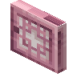
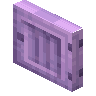
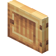
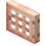
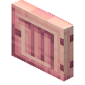

#dramaticdoors:categories/short_mysticsbiomes_doors
物品标签 · 6 个已收录成员
标签成员 (6)

矮樱桃木门dramaticdoors:short_mb_cherry_door

矮蓝花楹木门dramaticdoors:short_mb_jacaranda_door

Short Maple Doordramaticdoors:short_mb_maple_door

Short Peach Doordramaticdoors:short_mb_peach_doorShort Sea FoamDoor
dramaticdoors:short_mb_sea_foam_door

矮草莓木门dramaticdoors:short_mb_strawberry_door
使用该标签的配方
无